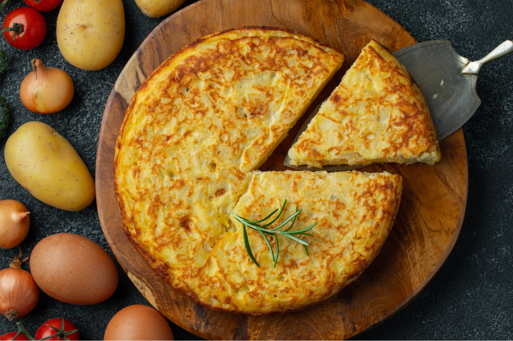

Tortilla

Esta tortilla esta destinada a conquistar el amor de las Claudias que
sean propiedad del cocinero. Solo necesita ingredientes que se encuentran en el planeta
tierra pero siempre van a ser mejor en Europa que en cualquier otro lado
Ingredientes
- Patatas frescas - 1 1/2 kg
- Huevos - 5
- cebollas - 2 medianas
- Aceite de oliva
Preparación
- Agite un cuchillo mediano antes de comenzar.
- Luego, mire fijo a las Patatas
y procure dominarlas mentalmente para que sepan quien manda.
- Tome los huevos por la base
y repita varias veces: ésta es la tortilla que te vas a comer.
- Seguidamente
corra por la casa gritando que las papas no se frien si están solas en el bosque.
- Sale a gusto y comasela.